Brahmagupta: Indian (598–668)
It is well known that our current system of numbers stems originally from India; yet it reached Western Europe via the Arabs, with whom Fibonacci worked in the early part of the thirteenth century (see chap. 10). Hence, we call our number system the Hindu-Arabic numerals. The mathematician perhaps most responsible for spreading this Indian-numeral system is the mathematician Brahmagupta, who was born in India in the year 598 CE in the town of Bhillamala (today, Bhinmal), which was the capital of Gurjaradesa, the second-largest kingdom of Western India. Brahmagupta was largely interested in astronomy, but also showed a great deal of creativity in mathematics, and it is for this reason that here we will highlight some of his findings. However, before we move on to his mathematical accomplishments, we should mention some of his astronomical discoveries, which include establishing that the earth is closer to the moon than it is to the sun, and calculating the earth’s circumference to be about 22,500 miles. (The actual circumference of the earth is 24,901 miles.) He also found that the length of a year was 365 days, 6 hours, 12 minutes, and 19 seconds, which is close to the actual year length that we know today: 365 days, 5 hours, 48 minutes, and 45 seconds.
In the year 628 CE, Brahmagupta wrote a book called Brāhmasphuṭasiddhānta (Brahma’s Correct System of Astronomy), which was based on previous works but also contained many of his new ideas, some of which we will present later. One striking feature of his book is that it was the first to mention zero as a number rather than as a placeholder. Later in Brāhmasphuṭasiddhānta, he describes arithmetic operations on negative numbers. He even delved into the question of zero divided by zero, which he defined as equal to zero; as we know today, though, that division remains as undefined.
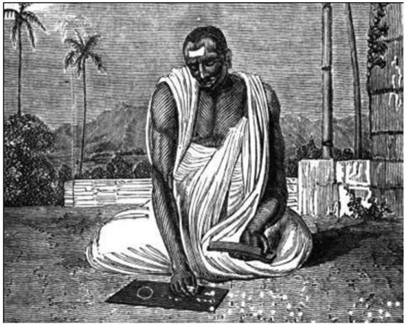
Figure 9.1. Brahmagupta. Nineteenth-century illustration of a Hindu astronomer. Original caption: “Dybuck, an astronomer, calculating an Eclipse.” The illustration, as well as the term dybuck, is derived from an etching with the title “Daybouk ou astronome hindou” by Frans Balthazar Solvyns (between 1791 and 1803), published in his Les Hindous (1808). See https://gl.wikipedia.org/wiki/Brahmagupta#/media/File:Hindu_astronomer,_19th-century_illustration.jpg.
{kind=link}
Brāhmasphuṭasiddhānta contains twenty-four chapters; chapter 18, on calculations, presents a method of finding both the square and the square root of numbers, as well as the cube and the cube root of numbers. He also introduced fractions in the way we write them today, and he provided the arithmetic for adding and multiplying fractions; for example,
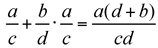
He also presented a formula for finding the solution to a linear equation, then leads up to the solution of a quadratic equation. Thus, he provided us with a variation of the formula that we are accustomed to using for solving the quadratic equation ax2 + bx + c = 0, namely,
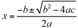
.Brahmagupta also provided formulas for finding the sum of the squares of the first n natural numbers,
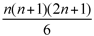
, and the cubes of the first n natural numbers,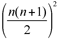
. He also developed a way of generating Pythagorean triples by letting a = mx, b = m + d, and c = m(1 + x) – d, where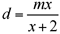
; with this we can then show by means of a simple algebraic application, a2 + b2 = c2.Perhaps the relationship that Brahmagupta is best known for is the formula he developed for finding the area of a cyclic quadrilateral, or a quadrilateral for which all four vertices lie on the same circle. Referring to the quadrilateral ABCD in figure 9.2, where the lengths of the sides are marked as a, b, c, and d, Brahmagupta showed that the area of the cyclic quadrilateral ABCD can be found by the formula
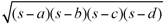
, where s is the semiperimeter, that is,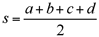
.This is an interesting extension of the famous formula that the Roman mathematician Hero of Alexandria (10–70 CE) developed for finding the area of a triangle, given only the lengths of the sides, a, b, and c: Area =
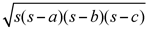
, where, once again, s is the semiperimeter. In effect, Brahmagupta considered Hero’s formula as treating the triangle as if it were a quadrilateral with the side d = 0.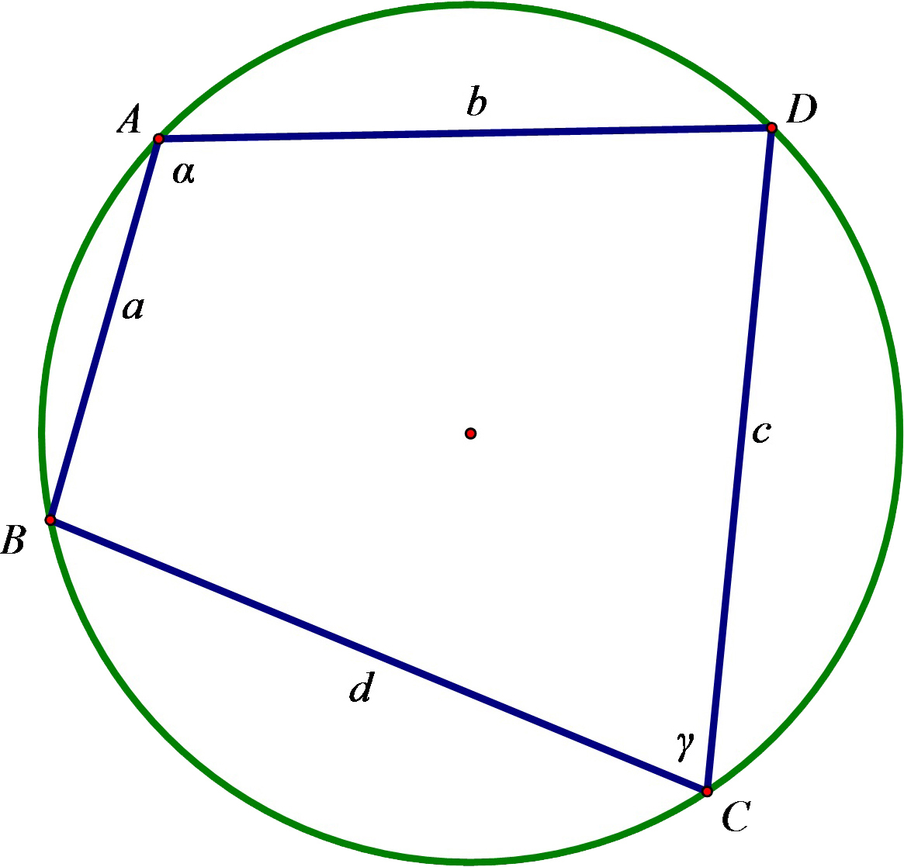
Figure 9.2.
An interesting extension of Brahmagupta’s formula to the general quadrilateral is that the area of any (convex) quadrilateral =
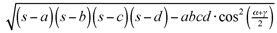
, where, once again, a, b, c, and d are the lengths of the sides,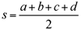
, and α and γ are the measures of a pair of opposite angles of the quadrilateral.This formula shows that of all quadrilaterals that can be formed from four given side lengths, the one with the maximum area is the cyclic quadrilateral. The maximum area is achieved when
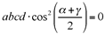
, which occurs when α + γ = 180°—a fact that holds true only for cyclic quadrilaterals.Brahmagupta also found that for a cyclic quadrilateral of consecutive sides of lengths a, b, c, and d, where m and n are the lengths of the diagonals, the following relationship holds true:
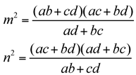
Another interesting relationship regarding cyclic quadrilaterals and attributed to Brahmagupta is that in a cyclic quadrilateral with perpendicular diagonals, the line through the point of intersection of the diagonals and perpendicular to a side of the quadrilateral bisects the opposite side.
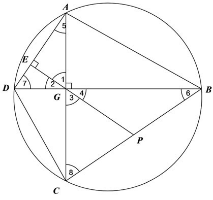
Figure 9.3.
The proof of this is rather simple and gives a further insight into cyclic quadrilaterals. Consider figure 9.3, where diagonals AC and BD of cyclic quadrilateral ABCD are perpendicular at G, and GE ⊥ AED. We just need to prove that GE bisects BC at P. In right triangle AEG, ∠5 is complementary to ∠1, and ∠2 is complementary to ∠1. Therefore, ∠5 = ∠2. However, ∠2 = ∠4. Thus, ∠5 = ∠4. Since ∠5 and ∠6 are equal in measure to half the measure of arc DC, they are congruent. Therefore, ∠4 = ∠6, and BP = GP. Similarly, ∠7 = ∠3 and ∠7 = ∠8, so that GP = PC. Thus CP = PB.
Using his mathematical talents, Brahmagupta was also a major player in the development of astronomy, as evidenced by an astronomical treatise he published in 667, which is entitled Khaṇḍakhādyaka. Thus, Brahmagupta is known in the world of astronomy as well as mathematics. He died shortly thereafter, in the year 668, in the town of Ujjain, India. His legacy today is primarily extending Hero’s formula for the area of a triangle to that of a cyclic quadrilateral.